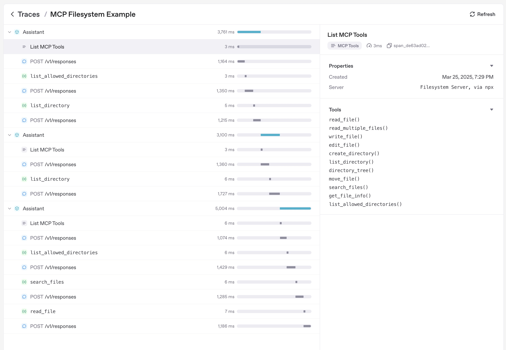

Model context protocol (MCP)
Model context protocol (MCP) は、アプリケーションがツールとコンテキストを言語モデルに公開する方法を標準化します。公式ドキュメントでは次のように説明されています。
MCP は、アプリケーションが LLM にコンテキストを提供する方法を標準化するオープンプロトコルです。MCP は、AI アプリケーション向けの USB-C ポートのようなものだと考えてください。USB-C がデバイスをさまざまな周辺機器やアクセサリーに接続するための標準化された方法を提供するのと同様に、MCP は AI モデルをさまざまなデータソースやツールに接続するための標準化された方法を提供します。
Agents Python SDK は複数の MCP トランスポートを認識します。これにより、既存の MCP サーバーを再利用したり、ファイルシステム、HTTP、またはコネクターを基盤とするツールをエージェントに公開する独自のサーバーを構築したりできます。
接続前の MCP サーバーの信頼性確認
MCP ツールは、モデルコンテキストのデータを公開し、提供された認証情報を使用してアクションを実行できます。信頼できるサーバーにのみ接続し、最小権限の認証情報を使用してください。アクセストークンは URL ではなく認可フィールドまたはヘッダーに保持し、機密性の高い操作には承認を必須としてください。OpenAI の MCP セキュリティガイダンスを参照してください。
MCP 統合の選択
MCP サーバーをエージェントに接続する前に、ツール呼び出しをどこで実行するか、およびどのトランスポートにアクセスできるかを決定します。以下の表は、Python SDK がサポートするオプションをまとめたものです。
| 必要なこと | 推奨オプション |
|---|---|
| OpenAI の Responses API がモデルに代わって、公開アクセス可能な MCP サーバーを呼び出す | HostedMCPTool を介した ホスト型 MCP サーバーツール |
| ローカルまたはリモートで実行する Streamable HTTP サーバーに接続する | MCPServerStreamableHttp を介した Streamable HTTP MCP サーバー |
| Server-Sent Events 対応 HTTP を実装するサーバーと通信する | MCPServerSse を介した SSE 対応 HTTP MCP サーバー |
| ローカルプロセスを起動し、stdin/stdout 経由で通信する | MCPServerStdio を介した stdio MCP サーバー |
以下のセクションでは、各オプション、その設定方法、およびあるトランスポートを別のトランスポートより優先すべき場合について説明します。
MCP Python SDK v1 と v2
Agents SDK は、依存関係の範囲 mcp>=1.19.0,<3 を通じて mcp Python パッケージの両方のメジャーバージョンをサポートします。インストール済みの mcp パッケージバージョンは、サーバーとネゴシエーションされる MCP プロトコルバージョンとは別のものです。Agents SDK は、インストール済みパッケージのメジャーバージョンを検出し、stdio、SSE、および Streamable HTTP 接続を自動的に適合させるため、通常のサーバー設定にバージョン切り替えは必要ありません。
MCP Python SDK v2 がインストールされている場合、Agents SDK は、設定されたローカルトランスポートを mode="auto" で囲んだ v2 の mcp.Client を作成します。クライアントは最初に、インストール済み MCP SDK がサポートする最新のプロトコルバージョンで server/discover プローブを送信します。最新のサーバーはプローブに応答し、クライアントはその結果を採用します。古いサーバーが server/discover をサポートしていない場合、クライアントは従来の initialize ハンドシェイクにフォールバックし、そこでネゴシエーションされたプロトコルバージョンを使用します。したがって、MCP Python SDK v2 をインストールしても、すべての接続で最新の MCP プロトコルバージョンの使用が強制されるわけではありません。MCP Python SDK のプロトコルバージョンネゴシエーションガイドを参照してください。
ほとんどのアプリケーションでは、依存関係リゾルバーに互換性のあるバージョンを選択させることを推奨します。アプリケーションを 1 つのメジャーバージョンに固定する必要がある場合は、openai-agents と併せて明示的な制約を追加します。
HTTP トランスポートのカスタマイズでは、インストール済み MCP パッケージが所有する HTTP スタックを使用する必要があります。
| カスタマイズ | MCP Python SDK v1 | MCP Python SDK v2 |
|---|---|---|
params["auth"] |
httpx.Auth |
httpx2.Auth |
params["httpx_client_factory"] の戻り値 |
httpx.AsyncClient |
httpx2.AsyncClient |
MCPServerStreamableHttp params["ignore_initialized_notification_failure"] = True |
サポート対象 | サポート対象外。接続前に拒否されます |
可能な場合は、以下の Streamable HTTP の例に示すように Authorization ヘッダーを使用してください。Authorization ヘッダーは、どちらのパッケージバージョンでも変更せずに機能します。アプリケーションが params["auth"] または params["httpx_client_factory"] を指定する場合、それらの値では、インストール済みの mcp パッケージのメジャーバージョンに対応する HTTP 型を使用する必要があります。アプリケーションが MCPServerStreamableHttp の params["ignore_initialized_notification_failure"] = True を設定する場合、アップグレード前に mcp<2 を維持するか、このオプションを無効にする必要があります。
OpenAI Responses API がリモート MCP 接続を管理するため、これらのローカルな mcp の依存関係要件は HostedMCPTool には適用されません。
エージェントレベルの MCP 設定
トランスポートの選択に加えて、Agent.mcp_config を設定することで、MCP ツールの準備方法を調整できます。
from agents import Agent
agent = Agent(
name="Assistant",
mcp_servers=[server],
mcp_config={
# Try to convert MCP tool schemas to strict JSON schema.
"convert_schemas_to_strict": True,
# If None, MCP tool failures are raised as exceptions instead of
# returning model-visible error text.
"failure_error_function": None,
# Prefix local MCP tool names with their server name.
"include_server_in_tool_names": True,
},
)
注:
convert_schemas_to_strictはベストエフォートです。スキーマを変換できない場合は、元のスキーマが使用されます。failure_error_functionは、MCP ツール呼び出しの失敗をモデルにどのように提示するかを制御します。failure_error_functionが設定されていない場合、SDK はデフォルトのツールエラーフォーマッターを使用します。- サーバーレベルの
failure_error_functionは、そのサーバーに対するAgent.mcp_config["failure_error_function"]を上書きします。 include_server_in_tool_namesはオプトインです。有効にすると、各ローカル MCP ツールは、決定論的なサーバープレフィックス付きの名前でモデルに公開されます。これは、複数の MCP サーバーが同じ名前のツールを公開する場合の衝突回避に役立ちます。生成される名前は ASCII セーフであり、FunctionToolインスタンスの名前の長さ制限内に収まり、ローカルのFunctionToolインスタンスに設定された名前や、同じエージェントで有効なハンドオフと衝突しません。SDK は引き続き、元のサーバー上で元の MCP ツール名を呼び出します。
トランスポート共通のパターン
トランスポートを選択した後、ほとんどの統合では、次の共通事項を決定する必要があります。
- ツールの一部だけを公開する方法（ツールフィルタリング）。
- サーバーが再利用可能なプロンプトも提供するかどうか（プロンプト）。
list_tools()をキャッシュするかどうか（キャッシュ）。- MCP アクティビティがトレースにどのように表示されるか（トレーシング）。
ローカル MCP サーバー（MCPServerStdio、MCPServerSse、MCPServerStreamableHttp）では、承認ポリシーと呼び出しごとの _meta ペイロードも共通の概念です。Streamable HTTP セクションには最も完全な例が示されており、同じパターンを他のローカルトランスポートにも適用できます。
1. ホスト型 MCP サーバーツール
ホスト型ツールは、ツールの一連のラウンドトリップ全体を OpenAI のインフラに移します。コードでツールを一覧表示して呼び出す代わりに、HostedMCPTool がサーバーラベル（およびオプションのコネクターメタデータ）を Responses API に転送します。モデルはリモートサーバーのツールを一覧表示し、Python プロセスへの追加のコールバックなしでそれらを呼び出します。現在、ホスト型ツールは、Responses API のホスト型 MCP 統合をサポートする OpenAI モデルで機能します。
基本的なホスト型 MCP ツール
エージェントの tools リストに HostedMCPTool を追加して、ホスト型ツールを作成します。tool_config
辞書は、REST API に送信する JSON を反映します。
import asyncio
from agents import Agent, HostedMCPTool, Runner
async def main() -> None:
agent = Agent(
name="Assistant",
instructions="Use the DeepWiki hosted MCP server to inspect openai/openai-agents-python.",
tools=[
HostedMCPTool(
tool_config={
"type": "mcp",
"server_label": "deepwiki",
"server_url": "https://mcp.deepwiki.com/mcp",
"require_approval": "never",
}
)
],
)
result = await Runner.run(
agent,
"Which language is the repository openai/openai-agents-python written in?",
)
print(result.final_output)
asyncio.run(main())
ホスト型サーバーはツールを自動的に公開するため、mcp_servers に追加する必要はありません。
ホスト型ツール検索でホスト型 MCP サーバーを遅延読み込みする場合は、tool_config["defer_loading"] = True を設定し、ToolSearchTool をエージェントに追加します。これは OpenAI Responses モデルでのみサポートされます。ツール検索の完全な設定と制約については、ツールを参照してください。
ホスト型 MCP の実行結果のストリーミング
ホスト型ツールは、関数ツールとまったく同じ方法で実行結果のストリーミングをサポートします。モデルがまだ処理中の間に増分 MCP 出力を受け取るには、Runner.run_streamed を使用します。
result = Runner.run_streamed(agent, "Summarise this repository's top languages")
async for event in result.stream_events():
if event.type == "run_item_stream_event":
print(f"Received: {event.item}")
print(result.final_output)
オプションの承認フロー
サーバーが機密性の高い操作を実行できる場合、各ツールの実行前に人間またはプログラムによる承認を必須にできます。tool_config 内の require_approval に、単一のポリシー（"always"、"never"）またはツール名をポリシーに対応付ける辞書を設定します。Python 内で決定するには、on_approval_request コールバックを指定します。
from agents import MCPToolApprovalFunctionResult, MCPToolApprovalRequest
SAFE_TOOLS = {"read_wiki_structure", "read_wiki_contents", "ask_question"}
def approve_tool(request: MCPToolApprovalRequest) -> MCPToolApprovalFunctionResult:
if request.data.name in SAFE_TOOLS:
return {"approve": True}
return {"approve": False, "reason": "Escalate to a human reviewer"}
agent = Agent(
name="Assistant",
tools=[
HostedMCPTool(
tool_config={
"type": "mcp",
"server_label": "deepwiki",
"server_url": "https://mcp.deepwiki.com/mcp",
"require_approval": "always",
},
on_approval_request=approve_tool,
)
],
)
コールバックは同期または非同期にでき、モデルが実行を継続するために承認データを必要とするたびに呼び出されます。
コネクターを基盤とするホスト型サーバー
ホスト型 MCP は OpenAI コネクターもサポートします。server_url を指定する代わりに、connector_id とアクセストークンを指定します。Responses API が認証を処理し、ホスト型サーバーがコネクターのツールを公開します。
import os
HostedMCPTool(
tool_config={
"type": "mcp",
"server_label": "google_calendar",
"connector_id": "connector_googlecalendar",
"authorization": os.environ["GOOGLE_CALENDAR_AUTHORIZATION"],
"require_approval": "never",
}
)
ストリーミング、承認、コネクターを含む、完全に動作するホスト型ツールのサンプルは examples/hosted_mcp にあります。
2. Streamable HTTP MCP サーバー
ネットワーク接続を自身で管理する場合は、MCPServerStreamableHttp を使用します。Streamable HTTP サーバーは、トランスポートを制御する場合や、低レイテンシを維持しながら独自のインフラ内でサーバーを実行する場合に最適です。
import asyncio
import os
from agents import Agent, Runner
from agents.mcp import MCPServerStreamableHttp
from agents.model_settings import ModelSettings
async def main() -> None:
token = os.environ["MCP_SERVER_TOKEN"]
async with MCPServerStreamableHttp(
name="Streamable HTTP Python Server",
params={
"url": "http://localhost:8000/mcp",
"headers": {"Authorization": f"Bearer {token}"},
"timeout": 10,
},
cache_tools_list=True,
max_retry_attempts=3,
) as server:
agent = Agent(
name="Assistant",
instructions="Use the MCP tools to answer the questions.",
mcp_servers=[server],
model_settings=ModelSettings(tool_choice="required"),
)
result = await Runner.run(agent, "Add 7 and 22.")
print(result.final_output)
asyncio.run(main())
コンストラクターは追加のオプションを受け付けます。
client_session_timeout_secondsは、MCP ClientSession の読み取りタイムアウトを制御します。datetime.timedeltaで表現可能かつ 1 マイクロ秒以上の正の有限値を指定すると、有限のタイムアウトが設定されます。Noneと0はタイムアウトを無効にします。その他の値は、サーバーの構築時に拒否されます。use_structured_contentは、テキスト出力よりtool_result.structured_contentを優先するかどうかを切り替えます。max_retry_attemptsとretry_backoff_seconds_baseは、list_tools()とcall_tool()に自動再試行を追加します。tool_filterを使用すると、ツールの一部だけを公開できます（ツールフィルタリングを参照）。require_approvalは、ローカル MCP ツールでヒューマンインザループの承認ポリシーを有効にします。failure_error_functionは、モデルに表示される MCP ツールの失敗メッセージをカスタマイズします。代わりにエラーを発生させるには、Noneに設定します。tool_meta_resolverは、call_tool()の前に、呼び出しごとの MCP_metaペイロードを挿入します。
ローカル MCP サーバーの承認ポリシー
MCPServerStdio、MCPServerSse、MCPServerStreamableHttp は、いずれも require_approval を受け付けます。
サポートされる形式:
- すべてのツールに対する
"always"または"never"。 Trueはすべてのツールに承認を必須とし、Falseはどのツールにも承認を必須としません（それぞれ"always"、"never"と同等です）。- ツールごとのマップ。例:
{"delete_file": "always", "read_file": "never"}。 - グループ化されたオブジェクト:
{"always": {"tool_names": [...]}, "never": {"tool_names": [...]}}。
async with MCPServerStreamableHttp(
name="Filesystem MCP",
params={"url": "http://localhost:8000/mcp"},
require_approval={"always": {"tool_names": ["delete_file"]}},
) as server:
...
完全な一時停止／再開フローについては、ヒューマンインザループおよび examples/mcp/get_all_mcp_tools_example/main.py を参照してください。
tool_meta_resolver を使用した呼び出しごとのメタデータ
MCP サーバーが _meta 内にリクエストメタデータ（テナント ID やトレースコンテキストなど）を必要とする場合は、tool_meta_resolver を使用します。以下の例では、dict を Runner.run(...) に context として渡すことを前提としています。
from agents.mcp import MCPServerStreamableHttp, MCPToolMetaContext
def resolve_meta(context: MCPToolMetaContext) -> dict[str, str] | None:
run_context_data = context.run_context.context or {}
tenant_id = run_context_data.get("tenant_id")
if tenant_id is None:
return None
return {"tenant_id": str(tenant_id), "source": "agents-sdk"}
server = MCPServerStreamableHttp(
name="Metadata-aware MCP",
params={"url": "http://localhost:8000/mcp"},
tool_meta_resolver=resolve_meta,
)
実行コンテキストが Pydantic モデル、dataclass、またはカスタムクラスの場合は、属性アクセスを使用してテナント ID を読み取ります。
MCP ツールの出力: テキスト、画像、その他のコンテンツ
MCP の実行結果でコンテンツブロックが使用される場合、SDK はテキストコンテンツをテキスト出力として転送し、画像コンテンツをツール出力内の画像型エントリにマッピングします。音声やリソースブロックなど、その他の MCP コンテンツブロック型については、SDK はブロックの有効な JSON シリアライズを値とするテキスト出力を転送します。複数のコンテンツブロックを含むレスポンスは、出力項目のリストとして転送されます。use_structured_content=True が空ではなくエラーでもない structuredContent ペイロードを選択した場合、その構造化ペイロードがこれらのコンテンツブロックより優先されます。構造化コンテンツがないか空の場合は、コンテンツブロックにフォールバックします。
3. SSE 対応 HTTP MCP サーバー
Warning
MCP プロジェクトでは、Server-Sent Events トランスポートは非推奨になっています。新しい統合では Streamable HTTP または stdio を優先し、SSE はレガシーサーバーにのみ使用してください。
MCP サーバーが SSE 対応 HTTP トランスポートを実装している場合は、MCPServerSse をインスタンス化します。トランスポートを除き、API は Streamable HTTP サーバーと同一です。
from agents import Agent, Runner
from agents.model_settings import ModelSettings
from agents.mcp import MCPServerSse
workspace_id = "demo-workspace"
async with MCPServerSse(
name="SSE Python Server",
params={
"url": "http://localhost:8000/sse",
"headers": {"X-Workspace": workspace_id},
},
cache_tools_list=True,
) as server:
agent = Agent(
name="Assistant",
mcp_servers=[server],
model_settings=ModelSettings(tool_choice="required"),
)
result = await Runner.run(agent, "What's the weather in Tokyo?")
print(result.final_output)
4. stdio MCP サーバー
ローカルのサブプロセスとして実行される MCP サーバーには、MCPServerStdio を使用します。SDK はプロセスを生成し、パイプを開いたままにして、コンテキストマネージャーの終了時に自動的に閉じます。このオプションは、簡単な概念実証や、サーバーがコマンドラインのエントリポイントのみを公開する場合に役立ちます。
from pathlib import Path
from agents import Agent, Runner
from agents.mcp import MCPServerStdio
current_dir = Path(__file__).parent
samples_dir = current_dir / "sample_files"
async with MCPServerStdio(
name="Filesystem Server via npx",
params={
"command": "npx",
"args": ["-y", "@modelcontextprotocol/server-filesystem", str(samples_dir)],
},
) as server:
agent = Agent(
name="Assistant",
instructions="Use the files in the sample directory to answer questions.",
mcp_servers=[server],
)
result = await Runner.run(agent, "List the files available to you.")
print(result.final_output)
5. MCP サーバーマネージャー
複数の MCP サーバーがある場合は、MCPServerManager を使用して事前に接続し、正常に接続されたサーバーのサブセットをエージェントに公開します。コンストラクターのオプションと再接続の動作については、MCPServerManager API リファレンスを参照してください。
from agents import Agent, Runner
from agents.mcp import MCPServerManager, MCPServerStreamableHttp
servers = [
MCPServerStreamableHttp(name="calendar", params={"url": "http://localhost:8000/mcp"}),
MCPServerStreamableHttp(name="docs", params={"url": "http://localhost:8001/mcp"}),
]
async with MCPServerManager(servers) as manager:
agent = Agent(
name="Assistant",
instructions="Use MCP tools when they help.",
mcp_servers=manager.active_servers,
)
result = await Runner.run(agent, "Which MCP tools are available?")
print(result.final_output)
主な動作:
drop_failed_servers=True（デフォルト）の場合、active_serversには正常に接続されたサーバーのみが含まれます。- 入力イテラブルで同じサーバーオブジェクトが繰り返されている場合、マネージャーはそのサーバーを 1 回だけ所有します。
all_serversとactive_serversにはそれぞれ 1 つのエントリが含まれ、そのサーバーの接続とクリーンアップは 1 回だけ実行されます。 - 失敗は
failed_serversとerrorsで追跡されます。 - 最初の接続失敗時に例外を発生させるには、
strict=Trueを設定します。 - 失敗したサーバーを再試行するには
reconnect(failed_only=True)を、すべてのサーバーを再起動するにはreconnect(failed_only=False)を呼び出します。 connect_all()、reconnect()、cleanup_all()の呼び出しは直列化されます。あるライフサイクル操作がすでに実行中の場合、別のライフサイクル操作は、同じサーバーへの接続やクリーンアップを同時に実行せず、その操作が完了するまで待機します。- ライフサイクルの動作を調整するには、
connect_timeout_seconds、cleanup_timeout_seconds、connect_in_parallelを設定します。両方のライフサイクルタイムアウトのデフォルトは 10 秒です。正の有限秒数、またはタイムアウトを無効にするNoneを指定でき、構築時と代入時の両方で検証されます。0 は即時の期限を作成するため拒否されます。
共通のサーバー機能
以下のセクションは、MCP サーバーの各トランスポートに共通して適用されます（正確な API サーフェスはサーバークラスによって異なります）。
ツールフィルタリング
各 MCP サーバーはツールフィルターをサポートしており、エージェントが必要とする関数だけを公開できます。フィルタリングは構築時に行うことも、実行ごとに動的に行うこともできます。
静的ツールフィルタリング
単純な許可／ブロックリストを設定するには、create_static_tool_filter を使用します。
from pathlib import Path
from agents.mcp import MCPServerStdio, create_static_tool_filter
samples_dir = Path("/path/to/files")
filesystem_server = MCPServerStdio(
params={
"command": "npx",
"args": ["-y", "@modelcontextprotocol/server-filesystem", str(samples_dir)],
},
tool_filter=create_static_tool_filter(allowed_tool_names=["read_file", "write_file"]),
)
allowed_tool_names と blocked_tool_names の両方が指定された場合、SDK は最初に許可リストを適用し、残った集合からブロック対象のツールを削除します。
動的ツールフィルタリング
より複雑なロジックには、ToolFilterContext を受け取る callable を渡します。callable は同期または非同期にでき、ツールを公開する場合は True を返します。
from pathlib import Path
from agents.mcp import MCPServerStdio, ToolFilterContext
samples_dir = Path("/path/to/files")
async def context_aware_filter(context: ToolFilterContext, tool) -> bool:
if context.agent.name == "Code Reviewer" and tool.name.startswith("danger_"):
return False
return True
async with MCPServerStdio(
params={
"command": "npx",
"args": ["-y", "@modelcontextprotocol/server-filesystem", str(samples_dir)],
},
tool_filter=context_aware_filter,
) as server:
...
フィルターコンテキストは、アクティブな run_context、ツールを要求している agent、および server_name を公開します。
ツールガードレール
ローカル MCP サーバークラスは、tool_input_guardrails と tool_output_guardrails を受け付けます。SDK は、フィルタリング後に残ったすべての MCP ツールに、これらのサーバー全体のガードレールを付加します。入力ガードレールは MCP サーバー呼び出しを防止して代替コンテンツを提供でき、出力ガードレールは、SDK が変換済み MCP の実行結果をモデルへ送り返す前に、その実行結果を検査します。これらのガードレールは、ツールガードレールで説明されているものと同じ関数ツール実行パイプライン、承認順序、実行結果の追跡、およびトリップワイヤー例外を使用します。
import json
from agents import ToolGuardrailFunctionOutput
from agents.decorators import tool_input_guardrail
from agents.mcp import MCPServerStdio
@tool_input_guardrail
def block_secret_arguments(data):
arguments = json.loads(data.context.tool_arguments or "{}")
if "secret" in arguments:
return ToolGuardrailFunctionOutput.reject_content(
"Remove secrets before calling this MCP tool."
)
return ToolGuardrailFunctionOutput.allow()
filesystem_server = MCPServerStdio(
params={
"command": "npx",
"args": ["-y", "@modelcontextprotocol/server-filesystem", "."],
},
tool_input_guardrails=[block_secret_arguments],
)
この設定は、MCPServerStdio、MCPServerSse、MCPServerStreamableHttp などのローカル MCP サーバーオブジェクトによって公開されるツールにのみ適用されます。Responses API がホスト型ツールとして実行する HostedMCPTool に、クライアント側のツールガードレールを追加するものではありません。
プロンプト
MCP サーバーは、エージェントの指示を動的に生成するプロンプトも提供できます。プロンプトをサポートするサーバーは、次の 2 つの メソッドを公開します。
list_prompts()は、利用可能なプロンプトテンプレートを列挙します。get_prompt(name, arguments)は、必要に応じてパラメーターを指定して、具体的なプロンプトを取得します。
from agents import Agent
prompt_result = await server.get_prompt(
"generate_code_review_instructions",
{"focus": "security vulnerabilities", "language": "python"},
)
instructions = prompt_result.messages[0].content.text
agent = Agent(
name="Code Reviewer",
instructions=instructions,
mcp_servers=[server],
)
ページネーション
組み込みのローカル MCP サーバークラスは、ツールとプロンプトの一覧表示時に nextCursor を自動的にたどります。list_tools() は、フィルターを適用したりキャッシュに格納したりする前に、完全なツールリストを収集します。list_prompts() は、nextCursor=None を含む 1 つの統合された実行結果を返します。後続のページが失敗した場合や、サーバーがカーソルを繰り返した場合、部分的な実行結果を公開またはキャッシュせずに、操作はエラーを発生させます。
リソースは引き続き明示的にページネーションされます。次のページを取得するには、list_resources() または list_resource_templates() の nextCursor を cursor 引数として渡します。
キャッシュ
エージェントの実行ごとに、各 MCP サーバーで list_tools() が呼び出されます。リモートサーバーでは顕著なレイテンシが発生する可能性があるため、すべての MCP サーバークラスは cache_tools_list オプションを公開しています。ツール定義が頻繁に変更されないと確信できる場合にのみ、True に設定してください。後で最新のリストを強制的に取得するには、サーバーインスタンスで invalidate_tools_cache() を呼び出します。
キャッシュが有効な場合、各 list_tools() の実行結果には、ネストされた入力スキーマを含む、キャッシュ済みツール定義の分離されたコピーが含まれます。動的ツールフィルターのコールバックも分離されたコピーを検査します。したがって、返されたツールやフィルターが受け取ったツールを変更しても、サーバーのキャッシュ済みスキーマや後続の list_tools() の実行結果は変更されません。
トレーシング
トレーシングでは、次の内容を含む MCP アクティビティが自動的に記録されます。
- ツールを一覧表示するための MCP サーバーへの呼び出し。
- ツール呼び出しに関する MCP 関連情報。

関連資料
- Model Context Protocol – 仕様と設計ガイド。
- examples/mcp – 実行可能な stdio、SSE、Streamable HTTP のサンプル。
- examples/hosted_mcp – 承認とコネクターを含む、ホスト型 MCP の完全なデモ。